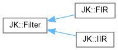
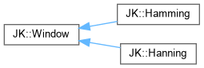

Digital Filters library
This is a C++ library for the design and analysis of digital signal filters (FIR, IIR).
Loading...
Searching...
No Matches
Class Hierarchy
Go to the textual class hierarchy


Generated by
1.9.8